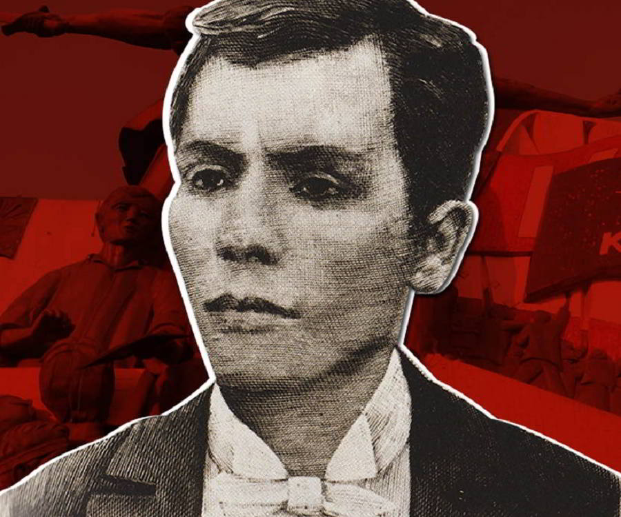

ANDRES BONIFACIO

President of the Sovereign Tagalog Nation
President of the Philippines (unofficial)
President of the Philippines (unofficial)
Andrés Bonifacio y de Castro was born on November 30, 1863, in Tondo, Manila. His father Santiago was a tailor, local politician, and boatman who operated a river-ferry. His mother Catalina de Castro was employed in a cigarette-rolling factory. The couple worked extremely hard to support Andrés and his five younger siblings, but in 1881 Catalina caught tuberculosis and died. The following year, Santiago also became ill and passed away.
At the age of 19, Bonifacio was forced to give up plans for higher education and begin working full-time to support his orphaned younger siblings. He worked for the British trading company J.M. Fleming & Co. as a broker, or corredor, for local raw materials such as tar and rattan. He later moved to the German firm Fressell & Co., where he worked as a bodeguero, or grocer.
Bonifacio's tragic family history during his youth seems to have followed him into adulthood. He married twice but had no surviving children at the time of his death.
His first wife Monica came from the Palomar neighborhood of Bacoor. She died young of leprosy (Hansen's disease). Bonifacio's second wife Gregoria de Jesus came from the Calookan area of Metro Manila. They married when he was 29 and she was just 18; their only child, a son, died in infancy.
In 1892, Bonifacio joined Jose Rizal's organization La Liga Filipina, which called for reform of the Spanish colonial regime in the Philippines. The group met only once, however, since Spanish officials arrested Rizal immediately after the first meeting and deported him to the southern island of Mindanao.
After Rizal's arrest and deportation, Bonifacio and others revived La Liga to maintain pressure on the Spanish government to free the Philippines. Along with his friends Ladislao Diwa and Teodoro Plata, however, he also founded a group called Katipunan.
Katipunan, or Kataastaasang Kagalannalangang Katipunan ng mga Anak ng Bayan (literally "Highest and Most Respected Society of the Children of the Country"), was dedicated to armed resistance against the colonial government. Made up mostly of people from the middle and lower classes, the Katipunan organization soon established regional branches in a number of provinces across the Philippines.
In 1895, Bonifacio became the top leader, or Presidente Supremo, of the Katipunan. Along with his friends Emilio Jacinto and Pio Valenzuela, Bonifacio published a newspaper called the Kalayaan, or "Freedom." Under Bonifacio's leadership in 1896, Katipunan grew from about 300 members to more than 30,000. With a militant mood sweeping the nation and a multi-island network in place, Bonifacio's organization was prepared to start fighting for freedom from Spain.
In 1892, Bonifacio joined Jose Rizal's organization La Liga Filipina, which called for reform of the Spanish colonial regime in the Philippines. The group met only once, however, since Spanish officials arrested Rizal immediately after the first meeting and deported him to the southern island of Mindanao.
After Rizal's arrest and deportation, Bonifacio and others revived La Liga to maintain pressure on the Spanish government to free the Philippines. Along with his friends Ladislao Diwa and Teodoro Plata, however, he also founded a group called Katipunan.
Katipunan, or Kataastaasang Kagalannalangang Katipunan ng mga Anak ng Bayan (literally "Highest and Most Respected Society of the Children of the Country"), was dedicated to armed resistance against the colonial government. Made up mostly of people from the middle and lower classes, the Katipunan organization soon established regional branches in a number of provinces across the Philippines.
In 1895, Bonifacio became the top leader, or Presidente Supremo, of the Katipunan. Along with his friends Emilio Jacinto and Pio Valenzuela, Bonifacio published a newspaper called the Kalayaan, or "Freedom." Under Bonifacio's leadership in 1896, Katipunan grew from about 300 members to more than 30,000. With a militant mood sweeping the nation and a multi-island network in place, Bonifacio's organization was prepared to start fighting for freedom from Spain.
In 1892, Bonifacio joined Jose Rizal's organization La Liga Filipina, which called for reform of the Spanish colonial regime in the Philippines. The group met only once, however, since Spanish officials arrested Rizal immediately after the first meeting and deported him to the southern island of Mindanao.
After Rizal's arrest and deportation, Bonifacio and others revived La Liga to maintain pressure on the Spanish government to free the Philippines. Along with his friends Ladislao Diwa and Teodoro Plata, however, he also founded a group called Katipunan.
Katipunan, or Kataastaasang Kagalannalangang Katipunan ng mga Anak ng Bayan (literally "Highest and Most Respected Society of the Children of the Country"), was dedicated to armed resistance against the colonial government. Made up mostly of people from the middle and lower classes, the Katipunan organization soon established regional branches in a number of provinces across the Philippines.
In 1895, Bonifacio became the top leader, or Presidente Supremo, of the Katipunan. Along with his friends Emilio Jacinto and Pio Valenzuela, Bonifacio published a newspaper called the Kalayaan, or "Freedom." Under Bonifacio's leadership in 1896, Katipunan grew from about 300 members to more than 30,000. With a militant mood sweeping the nation and a multi-island network in place, Bonifacio's organization was prepared to start fighting for freedom from Spain.
In 1892, Bonifacio joined Jose Rizal's organization La Liga Filipina, which called for reform of the Spanish colonial regime in the Philippines. The group met only once, however, since Spanish officials arrested Rizal immediately after the first meeting and deported him to the southern island of Mindanao.
After Rizal's arrest and deportation, Bonifacio and others revived La Liga to maintain pressure on the Spanish government to free the Philippines. Along with his friends Ladislao Diwa and Teodoro Plata, however, he also founded a group called Katipunan.
Katipunan, or Kataastaasang Kagalannalangang Katipunan ng mga Anak ng Bayan (literally "Highest and Most Respected Society of the Children of the Country"), was dedicated to armed resistance against the colonial government. Made up mostly of people from the middle and lower classes, the Katipunan organization soon established regional branches in a number of provinces across the Philippines.
In 1895, Bonifacio became the top leader, or Presidente Supremo, of the Katipunan. Along with his friends Emilio Jacinto and Pio Valenzuela, Bonifacio published a newspaper called the Kalayaan, or "Freedom." Under Bonifacio's leadership in 1896, Katipunan grew from about 300 members to more than 30,000. With a militant mood sweeping the nation and a multi-island network in place, Bonifacio's organization was prepared to start fighting for freedom from Spain.
Over the summer of 1896, the Spanish colonial government began to realize that the Philippines was on the verge of revolt. On August 19, authorities tried to preempt the uprising by arresting hundreds of people and jailing them under charges of treason. Some of those swept up were genuinely involved in the movement, but many were not.
Among those arrested was Jose Rizal, who was on a ship in Manila Bay waiting to ship out for service as a military doctor in Cuba (this was part of his plea bargain with the Spanish government, in exchange for his release from prison in Mindanao). Bonifacio and two friends dressed up as sailors and made their way onto the ship and tried to convince Rizal to escape with them, but he refused; he was later put on trial in a Spanish kangaroo court and executed.
Bonifacio kicked off the revolt by leading thousands of his followers to tear up their community tax certificates, or cedulas. This signaled their refusal to pay any more taxes to the Spanish colonial regime. Bonifacio named himself president and commander-in-chief of the Philippines revolutionary government, declaring the nation's independence from Spain on August 23. He issued a manifesto, dated August 28, 1896, calling for "all towns to rise simultaneously and attack Manila," and sent generals to lead the rebel forces in this offensive.
Bonifacio himself led an attack on the town of San Juan del Monte, intent on capturing Manila's metro water station and the powder magazine from the Spanish garrison. Although they were vastly outnumbered, the Spanish troops inside managed to hold off Bonifacio's forces until reinforcements arrived.
Bonifacio was forced to withdraw to Marikina, Montalban, and San Mateo; his group suffered heavy casualties. Elsewhere, other Katipunan groups attacked Spanish troops all around Manila. By early September, the revolution was spreading across the country.
As Spain pulled all its resources back to defend the capital at Manila, rebel groups in other areas began to sweep up the token Spanish resistance left behind. The group in Cavite (a peninsula south of the capital, jutting into Manila Bay), had the greatest success in driving the Spanish out. Cavite's rebels were led by an upper-class politician called Emilio Aguinaldo. By October of 1896, Aguinaldo's forces held most of the peninsula.
Bonifacio led a separate faction from Morong, about 35 miles east of Manila. The third group under Mariano Llanera was based in Bulacan, north of the capital. Bonifacio appointed generals to establish bases in the mountains all over Luzon island.
Despite his earlier military reverses, Bonifacio personally led an attack on Marikina, Montalban, and San Mateo. Although he initially succeeded in driving the Spanish out of those towns, they soon recaptured the cities, nearly killing Bonifacio when a bullet went through his collar.
Aguinaldo's faction in Cavite was in competition with a second rebel group headed by an uncle of Bonifacio's wife Gregoria de Jesus. As a more successful military leader and a member of a much wealthier, more influential family, Emilio Aguinaldo felt justified in forming his own rebel government in opposition to Bonifacio's. On March 22, 1897, Aguinaldo rigged an election at the rebels' Tejeros Convention to show that he was the proper president of the revolutionary government.
To Bonifacio's shame, he not only lost the presidency to Aguinaldo but was appointed to the lowly post of secretary of the interior. When Daniel Tirona questioned his fitness even for that job based on Bonifacio's lack of university education, the humiliated former president pulled out a gun and would have killed Tirona if a bystander had not stopped him.
After Emilio Aguinaldo "won" the rigged election at Tejeros, Bonifacio refused to recognize the new rebel government. Aguinaldo sent a group to arrest Bonifacio; the opposition leader did not realize that they were there with ill intent, and allowed them into his camp. They shot down his brother Ciriaco, seriously beat his brother Procopio, and according to some reports also raped his young wife Gregoria.
Aguinaldo had Bonifacio and Procopio tried for treason and sedition. After a one-day sham trial, in which the defense lawyer averred their guilt rather than defending them, both Bonifacios were convicted and sentenced to death.
Aguinaldo commuted the death sentence on May 8 but then reinstated it. On May 10, 1897, both Procopio and Bonifacio were likely shot dead by a firing squad on Nagpatong Mountain. Some accounts say that Bonifacio was too weak to stand, due to untreated battle wounds, and was actually hacked to death in his stretcher instead. He was just 34 years old.
As the first self-declared president of the independent Philippines, as well as the first leader of the Philippine Revolution, Bonifacio is a crucial figure in Filipino history. However, his exact legacy is the subject of dispute among Filipino scholars and citizens.
Jose Rizal is the most widely recognized "national hero of the Philippines," although he advocated a more pacifist approach to reforming Spanish colonial rule. Aguinaldo is generally cited as the first president of the Philippines, even though Bonifacio took on that title before Aguinaldo did. Some historians feel that Bonifacio has gotten short shrift and should be set beside Rizal on the national pedestal.
Bonifacio has been honored with a national holiday on his birthday, however, just like Rizal. November 30 is Bonifacio Day in the Philippines.